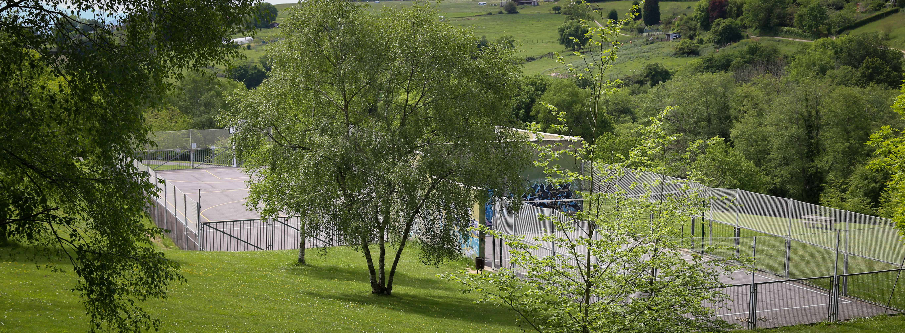

Un parque que lo tiene TODO
Parque de Purificación Tomás
Un parque que lo tiene TODO



Un parque que lo tiene TODO
Parque de Purificación Tomás
Un parque que lo tiene TODO
El parque más grande de la ciudad de Oviedo.
 Parque "Purificación Tomás"
Parque "Purificación Tomás"
El parque Purificación Tomás es uno de los lugares ideales de la
ciudad para pasear, andar en bicicleta o realizar otras actividades al aire libre.
En él podrás encontrar | Senderismo | Baloncesto | Disc-Golf |
Un lugar ideal para disfrutar del deporte.


Un parque ideal para practicar deporte.
 Deporte en el Parque "Purificación Tomás"
Deporte en el Parque "Purificación Tomás"
En el Parque Purificación Tomás se pueden practicar deportes variados como baloncesto, senderismo, mountain-bike o disc-golf. Cuenta con rutas e instalaciones para practicar estos deportes, también cuenta con un gimnasio al aire libre.


Con la técnica del golf, consiste en lanzar un disco y meterlo en cestas con cadenas.

Inaugurado en 2014, se
convirtió en el
primer campo de dieciocho hoyos del país. Este campo ofrece una
experiencia única, combinando la mitad de los hoyos en áreas abiertas y
la otra
mitad en zonas boscosas. Club
Disc Golf - OVIEDO

Amplio espacio donde las personas pueden realizar diferentes tipos de ejercicios físicos.

Recinto polideportivo
al aire
libre y bajo techo, cuenta con una serie de máquinas homologadas con las
que se pueden realizar diferentes tipos de ejercicios físicos: tren superior, tren
inferior y cardio.

Superficie de juego rectangular con tableros y aros en cada lado de menor ancho.

Cancha
reglamentaria
de baloncesto urbano, el campo de juego es un rectángulo de dimensiones 28 m x
15
m medidos desde el borde interior de las líneas que lo delimitan.

DISFRUTA DEL DEPORTE
AL AIRE LIBRE
Practicar deporte es fundamental para mantener una buena salud física y mental, ya que ayuda a prevenir enfermedadas, mejora tu estado de ánimo, y aumenta la energía diaria.
Explora y Disfruta
 Rutas y Actividades en Purificación Tomás
Rutas y Actividades en Purificación Tomás
Este parque ofrece varias
sendas y rutas que permiten disfrutar de la naturaleza y de vistas
espectaculares del Naranco y de la Sierra del Aramo:
1-Senda Circular del Parque.
2-Ruta hacia el Monte Naranco.
3-Sendero de la Finca Monte Altu.
Sobre Nosotros
Somos un equipo apasionado de desarrolladores y diseñadores dedicados a crear experiencias web
únicas.
Nuestra misión es transformar la experiencia de visitar los parques por excelencia
de oviedo
en realidades digitales que sean visualmente atractivas, intuitivas y fáciles de ver.
© 2024 Parque Purificación Tomás. Todos lo derechos reservados